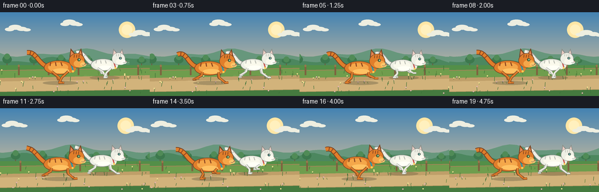
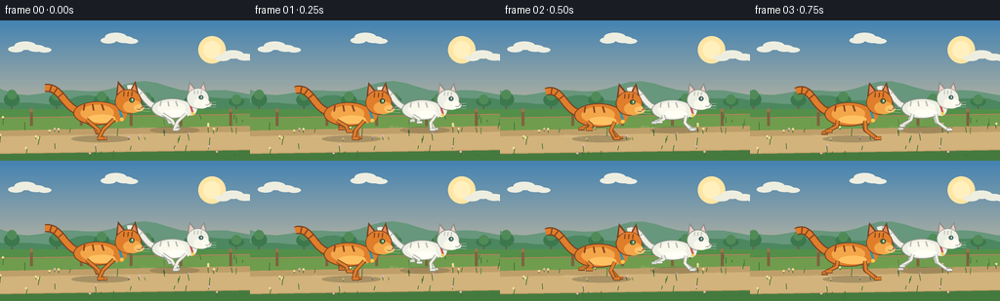

CODING AGENTS AS PIXEL WORLD MODELS
traex/GPT-5.6-Sol · instance_preservation_0004
点击播放 · 原生 RGB 像素
逐轮保存的候选
回放视频、检查图与代码变化。
每份候选均可单独播放。实际图片检查记录在下方工具轨迹中。
候选 01播放与检查图
点击播放 · 原生 RGB 像素


展开代码变化
--- 上一保存版本
+++ 本次保存版本
@@ -0,0 +1,255 @@
+from pathlib import Path
+import math
+import numpy as np
+from PIL import Image, ImageDraw, ImageFilter
+import artifact_io
+
+W, H, N, FPS = 256, 144, 20, 4.0
+S = 4
+TAU = math.tau
+
+
+def sc(v):
+ return int(round(v * S))
+
+def box(b):
+ return tuple(sc(v) for v in b)
+
+def pts(seq):
+ return [(sc(x), sc(y)) for x, y in seq]
+
+def ellipse(d, b, fill, outline=None, width=1):
+ d.ellipse(box(b), fill=fill, outline=outline, width=sc(width) if outline else 1)
+
+def polygon(d, p, fill, outline=None):
+ d.polygon(pts(p), fill=fill)
+ if outline:
+ d.line(pts(list(p)+[p[0]]), fill=outline, width=sc(0.7), joint='curve')
+
+def line(d, p, fill, width, joint='curve'):
+ d.line(pts(p), fill=fill, width=sc(width), joint=joint)
+
+def cubic(p0, p1, p2, p3, steps=24):
+ out=[]
+ for i in range(steps+1):
+ t=i/steps; u=1-t
+ out.append((u**3*p0[0]+3*u*u*t*p1[0]+3*u*t*t*p2[0]+t**3*p3[0],
+ u**3*p0[1]+3*u*u*t*p1[1]+3*u*t*t*p2[1]+t**3*p3[1]))
+ return out
+
+def mix(a,b,t):
+ return tuple(int(a[i]*(1-t)+b[i]*t) for i in range(3))
+
+def background(frame):
+ # High resolution painted sunrise sky.
+ h, w = H*S, W*S
+ y = np.linspace(0,1,h)[:,None,None]
+ top=np.array([68,131,178])[None,None,:]
+ horizon=np.array([247,207,151])[None,None,:]
+ arr=np.repeat((top*(1-y)+horizon*y), w, axis=1).astype(np.uint8)
+ im=Image.fromarray(arr, 'RGB')
+ d=ImageDraw.Draw(im)
+ cam=frame*6.1
+ # Sun and thin clouds move very slowly under camera tracking.
+ ellipse(d, (203-cam*.035,16,231-cam*.035,44), (255,230,165))
+ ellipse(d, (208-cam*.035,21,226-cam*.035,39), (255,240,190))
+ for cx,cy,ww in [(30,27,43),(122,18,34),(243,36,48)]:
+ x=cx-cam*.08
+ while x < -60: x += 350
+ for offx,offy,r in [(-.32,1,8),(-.1,-3,11),(.16,0,9),(.36,2,7)]:
+ ellipse(d,(x+offx*ww-r,cy+offy-r*.22,x+offx*ww+r,cy+offy+r*.55),(238,238,224))
+ # Far ridges with parallax.
+ shift=cam*.18
+ ridge=[]
+ for xx in range(-80,380,12):
+ yy=70 + 5*math.sin((xx+shift)*.032)+3*math.sin((xx+shift)*.075)
+ ridge.append((xx-shift,yy))
+ polygon(d, [(-10,100)]+ridge+[(390,100)], (103,151,124))
+ ridge2=[]
+ for xx in range(-80,390,10):
+ yy=82 + 4*math.sin((xx+cam*.35)*.049)+2*math.cos((xx+cam*.35)*.11)
+ ridge2.append((xx-cam*.35,yy))
+ polygon(d,[(-90,112)]+ridge2+[(390,112)],(76,135,95))
+ # Distant tree clumps.
+ for wx in range(-80,500,46):
+ x=wx-cam*.47
+ base=91
+ hh=8+(wx*17%9)
+ trunk=(109,91,61)
+ line(d,[(x,base),(x,base-hh*.75)],trunk,1.5)
+ ellipse(d,(x-8,base-hh-3,x+8,base-3),(61,120,77))
+ ellipse(d,(x-5,base-hh-6,x+5,base-hh+4),(80,139,87))
+ # Meadow and running path.
+ polygon(d,[(-5,91),(261,91),(261,145),(-5,145)],(83,143,72))
+ # bands of grass and earthen path
+ polygon(d,[(-5,101),(261,97),(261,124),(-5,127)],(111,157,77))
+ polygon(d,[(-5,113),(261,108),(261,139),(-5,142)],(191,159,105))
+ polygon(d,[(-5,119),(261,114),(261,132),(-5,136)],(210,179,123))
+ polygon(d,[(-5,137),(261,133),(261,145),(-5,145)],(69,122,63))
+ # Fence in middle ground, emphasizes lateral motion.
+ fence_shift=cam*.72
+ line(d,[(-5,100),(261,96)],(166,137,88),1.5)
+ for wx in range(-70,500,51):
+ x=wx-fence_shift
+ line(d,[(x,92),(x,108)],(126,98,63),3)
+ ellipse(d,(x-1.7,90,x+1.7,94),(151,119,76))
+ # Grasses and tiny wildflowers, deterministic positions.
+ rng=np.random.default_rng(414)
+ for wx, gy, ht, kind in zip(rng.uniform(-80,500,105),rng.uniform(96,143,105),rng.uniform(2,8,105),rng.integers(0,6,105)):
+ par=.88 if gy<119 else 1.04
+ x=wx-cam*par
+ if -4<x<W+4:
+ col=(57,111,55) if kind else (85,126,56)
+ line(d,[(x,gy),(x+math.sin(wx)*1.1,gy-ht)],col,.65)
+ if kind in (1,2) and gy>105:
+ flower=(244,224,146) if kind==1 else (228,179,177)
+ ellipse(d,(x-1.1,gy-ht-1.1,x+1.1,gy-ht+1.1),flower)
+ return im
+
+
+def draw_shadow(layer, x, ground, scale, alpha=75):
+ dd=ImageDraw.Draw(layer)
+ dd.ellipse(box((x-29*scale,ground-3,x+29*scale,ground+4)), fill=(50,52,40,alpha))
+
+
+def limb(draw, anchor, foot, base, dark, scale, front=False):
+ ax,ay=anchor; fx,fy=foot
+ # articulated knee/elbow; front legs bend subtly backward, hind legs forward.
+ if front:
+ kx=ax + (fx-ax)*.43 - 4.0*scale
+ else:
+ kx=ax + (fx-ax)*.48 + 4.2*scale
+ ky=ay + (fy-ay)*.52
+ line(draw,[(ax,ay),(kx,ky),(fx,fy)],dark,4.1*scale)
+ line(draw,[(ax,ay),(kx,ky),(fx,fy)],base,2.7*scale)
+ # horizontal paw makes locomotion direction clear.
+ line(draw,[(fx-1.5*scale,fy),(fx+5.2*scale,fy+.2*scale)],dark,3.7*scale)
+ line(draw,[(fx-1.0*scale,fy-.25*scale),(fx+4.8*scale,fy-.25*scale)],base,2.4*scale)
+
+
+def gait_foot(anchor_x, ground, ph, scale, stride=14):
+ # Backward power stroke along ground, then a clearly lifted recovery arc.
+ sn=math.sin(ph)
+ x=anchor_x + stride*scale*math.cos(ph)
+ lift=max(0.0,sn)**0.75 * 9.2*scale
+ return x, ground-lift
+
+
+def draw_cat(base_im, x, ground, scale, phase, kind):
+ # Cat is rendered on a transparent layer to preserve soft shadows and edges.
+ layer=Image.new('RGBA', base_im.size,(0,0,0,0))
+ d=ImageDraw.Draw(layer)
+ if kind=='orange':
+ base=(224,126,43,255); light=(244,167,74,255); hi=(255,194,99,255)
+ dark=(120,67,35,255); stripe=(139,70,33,255); eye=(84,139,75,255)
+ collar=(50,151,167,255); nose=(155,77,66,255)
+ else:
+ base=(238,239,228,255); light=(250,249,236,255); hi=(255,255,246,255)
+ dark=(139,143,137,255); stripe=(188,190,181,255); eye=(73,139,137,255)
+ collar=(203,83,77,255); nose=(192,120,121,255)
+ # Running body bounce and tiny pitch-like offsets.
+ bob=-2.15*scale*(.5+.5*math.cos(2*phase))
+ cy=ground-22.5*scale+bob
+ # ground shadow separated from moving animal
+ draw_shadow(layer,x+2*scale,ground,scale,55 if kind=='white' else 68)
+ # Tail behind body, alive but identity-consistent.
+ tx=x-22*scale; ty=cy-3*scale
+ tailwave=math.sin(phase*.55)*2.2*scale
+ curve=cubic((tx,ty),(x-35*scale,cy-9*scale+tailwave),(x-38*scale,cy-27*scale-tailwave),(x-53*scale,cy-25*scale+tailwave),28)
+ line(d,curve,dark,8.2*scale)
+ line(d,curve,base,5.7*scale)
+ # tail rings for recognizable tabby / soft gray white-cat accents
+ for frac in (.55,.72,.87):
+ idx=int(frac*(len(curve)-1)); px,py=curve[idx]
+ # small cross-stroke approximates ring around slender tail
+ j=max(1,idx-1); vx=curve[idx][0]-curve[j][0]; vy=curve[idx][1]-curve[j][1]
+ mag=max(1,math.hypot(vx,vy)); nx=-vy/mag; ny=vx/mag
+ line(d,[(px-nx*3*scale,py-ny*3*scale),(px+nx*3*scale,py+ny*3*scale)],stripe,1.5*scale)
+ # Far pair of legs, slightly shaded, then body overlays their roots.
+ farbase=mix(base[:3],dark[:3],.17)+(255,)
+ # Bounding gallop: hind pair and fore pair oppose; offsets keep all four leg silhouettes visible.
+ for front, ax, phoff in [(False,x-14*scale,phase+0.42),(True,x+13*scale,phase+math.pi+0.40)]:
+ fx,fy=gait_foot(ax,ground-1*scale,phoff,scale,13.5)
+ limb(d,(ax,cy+7*scale),(fx,fy),farbase,dark,scale*.9,front)
+ # body/chest
+ ellipse(d,(x-25*scale,cy-12*scale,x+23*scale,cy+11.5*scale),dark)
+ ellipse(d,(x-24*scale,cy-11.2*scale,x+22*scale,cy+10.5*scale),base)
+ ellipse(d,(x-18*scale,cy-8.6*scale,x+15*scale,cy+7.3*scale),light)
+ # Belly highlight and chest tuft.
+ ellipse(d,(x-11*scale,cy+1*scale,x+17*scale,cy+9.2*scale),hi)
+ polygon(d,[(x+15*scale,cy-4*scale),(x+25*scale,cy+3*scale),(x+17*scale,cy+9*scale)],light)
+ # Near legs in front of torso for unambiguous four-legged running.
+ for front, ax, phoff in [(False,x-12*scale,phase),(True,x+15*scale,phase+math.pi)]:
+ fx,fy=gait_foot(ax,ground,phoff,scale,15)
+ limb(d,(ax,cy+6*scale),(fx,fy),base,dark,scale,front)
+ # tabby body stripes; gray pearl stripes are deliberately subtle on white cat.
+ for off,tilt,leng in [(-14,-1,7),(-6,1,8),(3,2,7)]:
+ xx=x+off*scale
+ line(d,[(xx,cy-9*scale),(xx+tilt*scale,cy-3*scale)],stripe,1.7*scale)
+ # Neck and collar behind head.
+ ellipse(d,(x+15*scale,cy-11*scale,x+28*scale,cy+8*scale),base)
+ line(d,[(x+19*scale,cy-8*scale),(x+23*scale,cy+5*scale)],collar,2.3*scale)
+ # Head profile, facing right.
+ hx=x+29*scale; hy=cy-11*scale
+ # ears with dark rims and bright inner triangles
+ polygon(d,[(hx-12*scale,hy-7*scale),(hx-10*scale,hy-21*scale),(hx-1*scale,hy-10*scale)],dark)
+ polygon(d,[(hx+1*scale,hy-10*scale),(hx+7*scale,hy-21*scale),(hx+11*scale,hy-6*scale)],dark)
+ polygon(d,[(hx-10.2*scale,hy-8.5*scale),(hx-9.2*scale,hy-17.5*scale),(hx-3*scale,hy-10*scale)],mix(base[:3],(233,152,145),.38)+(255,))
+ polygon(d,[(hx+2.5*scale,hy-10*scale),(hx+6.4*scale,hy-17.5*scale),(hx+9.2*scale,hy-7*scale)],mix(base[:3],(233,152,145),.38)+(255,))
+ ellipse(d,(hx-13*scale,hy-13*scale,hx+13*scale,hy+11*scale),dark)
+ ellipse(d,(hx-12.2*scale,hy-12.3*scale,hx+12.2*scale,hy+10.3*scale),base)
+ # cheek and muzzle
+ ellipse(d,(hx-5*scale,hy-2*scale,hx+13.5*scale,hy+10.5*scale),light)
+ ellipse(d,(hx+5.5*scale,hy+2*scale,hx+15.5*scale,hy+9*scale),hi)
+ # forehead tabby accents
+ for oo in (-4,0,4):
+ line(d,[(hx+oo*scale,hy-10.5*scale),(hx+(oo-.5)*scale,hy-6*scale)],stripe,1.25*scale)
+ # eye, nose, mouth
+ ellipse(d,(hx+1*scale,hy-4.8*scale,hx+6.2*scale,hy+.2*scale),(52,57,49,255))
+ ellipse(d,(hx+2*scale,hy-4.1*scale,hx+5.4*scale,hy-.2*scale),eye)
+ ellipse(d,(hx+3.8*scale,hy-3.7*scale,hx+4.7*scale,hy-1.6*scale),(245,247,214,255))
+ polygon(d,[(hx+13.6*scale,hy+2.7*scale),(hx+16.1*scale,hy+3.8*scale),(hx+13.8*scale,hy+5.4*scale)],nose)
+ line(d,[(hx+14*scale,hy+5*scale),(hx+11*scale,hy+7*scale),(hx+8.5*scale,hy+6.5*scale)],dark,.75*scale)
+ # whiskers extend forward
+ for yy,dy in [(4,-1),(6,0),(8,1)]:
+ line(d,[(hx+9*scale,hy+yy*scale),(hx+21*scale,hy+(yy+dy)*scale)],(238,233,214,225),.45*scale)
+ # collar tag
+ ellipse(d,(x+21*scale,cy+4.0*scale,x+24.5*scale,cy+7.5*scale),(245,205,83,255))
+ base_im.alpha_composite(layer)
+
+
+def add_dust(im, frame, x, ground, phase, scale):
+ # Restrained translucent dust at push-off points; no identity-obscuring blur.
+ lay=Image.new('RGBA',im.size,(0,0,0,0)); d=ImageDraw.Draw(lay)
+ strength=max(0,math.sin(phase))
+ if strength>.25:
+ for j in range(4):
+ age=(j+1)*.7
+ px=x-18*scale-j*5-frame%2
+ py=ground-1-j*.7
+ r=(1.4+j*.55)*scale
+ d.ellipse(box((px-r,py-r*.55,px+r,py+r*.55)),fill=(225,199,151,int(45*strength)))
+ im.alpha_composite(lay)
+
+
+def make_frame(i):
+ bg=background(i).convert('RGBA')
+ # Orange cat leads low in the frame; white companion remains behind/right and slightly smaller.
+ phase=TAU*(i/8.0)
+ # Subtle independent drift makes the pair feel alive but keeps each instance stable.
+ ox=101+1.5*math.sin(i*.33)
+ wx=176+1.2*math.sin(i*.31+1.1)
+ draw_cat(bg,wx,112,0.88,phase+0.38,'white')
+ draw_cat(bg,ox,121,1.04,phase,'orange')
+ add_dust(bg,i,wx,112,phase+.38,.88)
+ add_dust(bg,i,ox,121,phase,1.04)
+ # final antialias reduction
+ return np.asarray(bg.convert('RGB').resize((W,H),Image.Resampling.LANCZOS),dtype=np.uint8)
+
+
+def main():
+ frames=np.stack([make_frame(i) for i in range(N)],axis=0)
+ artifact_io.save(frames,Path(__file__).resolve().parent)
+
+if __name__=='__main__':
+ main()
可观测工具轨迹
实际执行的命令与返回图片。
命令 1exit 0
/bin/bash -lc "ls -la && printf '\\n--- prompt.txt ---\\n' && cat prompt.txt && printf '\\n--- GENERATION_RULES.md ---\\n' && cat GENERATION_RULES.md && printf '\\n--- task_spec.json ---\\n' && cat task_spec.json"
命令 2exit 0
/bin/bash -lc "sed -n '1,240p' artifact_io.py"
命令 3exit 0
/bin/bash -lc "cat > generate.py <<'PY'
from pathlib import Path
import math
import numpy as np
from PIL import Image, ImageDraw, ImageFilter
import artifact_io
W, H, N, FPS = 256, 144, 20, 4.0
S = 4
TAU = math.tau
def sc(v):
return int(round(v * S))
def box(b):
return tuple(sc(v) for v in b)
def pts(seq):
return [(sc(x), sc(y)) for x, y in seq]
def ellipse(d, b, fill, outline=None, width=1):
d.ellipse(box(b), fill=fill, outline=outline, width=sc(width) if outline else 1)
def polygon(d, p, fill, outline=None):
d.polygon(pts(p), fill=fill)
if outline:
d.line(pts(list(p)+[p[0]]), fill=outline, width=sc(0.7), joint='curve')
def line(d, p, fill, width, joint='curve'):
d.line(pts(p), fill=fill, width=sc(width), joint=joint)
def cubic(p0, p1, p2, p3, steps=24):
out=[]
for i in range(steps+1):
t=i/steps; u=1-t
out.append((u**3*p0[0]+3*u*u*t*p1[0]+3*u*t*t*p2[0]+t**3*p3[0],
u**3*p0[1]+3*u*u*t*p1[1]+3*u*t*t*p2[1]+t**3*p3[1]))
return out
def mix(a,b,t):
return tuple(int(a[i]*(1-t)+b[i]*t) for i in range(3))
def background(frame):
# High resolution painted sunrise sky.
h, w = H*S, W*S
y = np.linspace(0,1,h)[:,None,None]
top=np.array([68,131,178])[None,None,:]
horizon=np.array([247,207,151])[None,None,:]
arr=np.repeat((top*(1-y)+horizon*y), w, axis=1).astype(np.uint8)
im=Image.fromarray(arr, 'RGB')
d=ImageDraw.Draw(im)
cam=frame*6.1
# Sun and thin clouds move very slowly under camera tracking.
ellipse(d, (203-cam*.035,16,231-cam*.035,44), (255,230,165))
ellipse(d, (208-cam*.035,21,226-cam*.035,39), (255,240,190))
for cx,cy,ww in [(30,27,43),(122,18,34),(243,36,48)]:
x=cx-cam*.08
while x < -60: x += 350
for offx,offy,r in [(-.32,1,8),(-.1,-3,11),(.16,0,9),(.36,2,7)]:
ellipse(d,(x+offx*ww-r,cy+offy-r*.22,x+offx*ww+r,cy+offy+r*.55),(238,238,224))
# Far ridges with parallax.
shift=cam*.18
ridge=[]
for xx in range(-80,380,12):
yy=70 + 5*math.sin((xx+shift)*.032)+3*math.sin((xx+shift)*.075)
ridge.append((xx-shift,yy))
polygon(d, [(-10,100)]+ridge+[(390,100)], (103,151,124))
ridge2=[]
for xx in range(-80,390,10):
yy=82 + 4*math.sin((xx+cam*.35)*.049)+2*math.cos((xx+cam*.35)*.11)
ridge2.append((xx-cam*.35,yy))
polygon(d,[(-90,112)]+ridge2+[(390,112)],(76,135,95))
# Distant tree clumps.
for wx in range(-80,500,46):
x=wx-cam*.47
base=91
hh=8+(wx*17%9)
trunk=(109,91,61)
line(d,[(x,base),(x,base-hh*.75)],trunk,1.5)
ellipse(d,(x-8,base-hh-3,x+8,base-3),(61,120,77))
ellipse(d,(x-5,base-hh-6,x+5,base-hh+4),(80,139,87))
# Meadow and running path.
polygon(d,[(-5,91),(261,91),(261,145),(-5,145)],(83,143,72))
# bands of grass and earthen path
polygon(d,[(-5,101),(261,97),(261,124),(-5,127)],(111,157,77))
polygon(d,[(-5,113),(261,108),(261,139),(-5,142)],(191,159,105))
polygon(d,[(-5,119),(261,114),(261,132),(-5,136)],(210,179,123))
polygon(d,[(-5,137),(261,133),(261,145),(-5,145)],(69,122,63))
# Fence in middle ground, emphasizes lateral motion.
fence_shift=cam*.72
line(d,[(-5,100),(261,96)],(166,137,88),1.5)
for wx in range(-70,500,51):
x=wx-fence_shift
line(d,[(x,92),(x,108)],(126,98,63),3)
ellipse(d,(x-1.7,90,x+1.7,94),(151,119,76))
# Grasses and tiny wildflowers, deterministic positions.
rng=np.random.default_rng(414)
for wx, gy, ht, kind in zip(rng.uniform(-80,500,105),rng.uniform(96,143,105),rng.uniform(2,8,105),rng.integers(0,6,105)):
par=.88 if gy<119 else 1.04
x=wx-cam*par
if -4<x<W+4:
col=(57,111,55) if kind else (85,126,56)
line(d,[(x,gy),(x+math.sin(wx)*1.1,gy-ht)],col,.65)
if kind in (1,2) and gy>105:
flower=(244,224,146) if kind==1 else (228,179,177)
ellipse(d,(x-1.1,gy-ht-1.1,x+1.1,gy-ht+1.1),flower)
return im
def draw_shadow(layer, x, ground, scale, alpha=75):
dd=ImageDraw.Draw(layer)
dd.ellipse(box((x-29*scale,ground-3,x+29*scale,ground+4)), fill=(50,52,40,alpha))
def limb(draw, anchor, foot, base, dark, scale, front=False):
ax,ay=anchor; fx,fy=foot
# articulated knee/elbow; front legs bend subtly backward, hind legs forward.
if front:
kx=ax + (fx-ax)*.43 - 4.0*scale
else:
kx=ax + (fx-ax)*.48 + 4.2*scale
ky=ay + (fy-ay)*.52
line(draw,[(ax,ay),(kx,ky),(fx,fy)],dark,4.1*scale)
line(draw,[(ax,ay),(kx,ky),(fx,fy)],base,2.7*scale)
# horizontal paw makes locomotion direction clear.
line(draw,[(fx-1.5*scale,fy),(fx+5.2*scale,fy+.2*scale)],dark,3.7*scale)
line(draw,[(fx-1.0*scale,fy-.25*scale),(fx+4.8*scale,fy-.25*scale)],base,2.4*scale)
def gait_foot(anchor_x, ground, ph, scale, stride=14):
# Backward power stroke along ground, then a clearly lifted recovery arc.
sn=math.sin(ph)
x=anchor_x + stride*scale*math.cos(ph)
lift=max(0.0,sn)**0.75 * 9.2*scale
return x, ground-lift
def draw_cat(base_im, x, ground, scale, phase, kind):
# Cat is rendered on a transparent layer to preserve soft shadows and edges.
layer=Image.new('RGBA', base_im.size,(0,0,0,0))
d=ImageDraw.Draw(layer)
if kind=='orange':
base=(224,126,43,255); light=(244,167,74,255); hi=(255,194,99,255)
dark=(120,67,35,255); stripe=(139,70,33,255); eye=(84,139,75,255)
collar=(50,151,167,255); nose=(155,77,66,255)
else:
base=(238,239,228,255); light=(250,249,236,255); hi=(255,255,246,255)
dark=(139,143,137,255); stripe=(188,190,181,255); eye=(73,139,137,255)
collar=(203,83,77,255); nose=(192,120,121,255)
# Running body bounce and tiny pitch-like offsets.
bob=-2.15*scale*(.5+.5*math.cos(2*phase))
cy=ground-22.5*scale+bob
# ground shadow separated from moving animal
draw_shadow(layer,x+2*scale,ground,scale,55 if kind=='white' else 68)
# Tail behind body, alive but identity-consistent.
tx=x-22*scale; ty=cy-3*scale
tailwave=math.sin(phase*.55)*2.2*scale
curve=cubic((tx,ty),(x-35*scale,cy-9*scale+tailwave),(x-38*scale,cy-27*scale-tailwave),(x-53*scale,cy-25*scale+tailwave),28)
line(d,curve,dark,8.2*scale)
line(d,curve,base,5.7*scale)
# tail rings for recognizable tabby / soft gray white-cat accents
for frac in (.55,.72,.87):
idx=int(frac*(len(curve)-1)); px,py=curve[idx]
# small cross-stroke approximates ring around slender tail
j=max(1,idx-1); vx=curve[idx][0]-curve[j][0]; vy=curve[idx][1]-curve[j][1]
mag=max(1,math.hypot(vx,vy)); nx=-vy/mag; ny=vx/mag
line(d,[(px-nx*3*scale,py-ny*3*scale),(px+nx*3*scale,py+ny*3*scale)],stripe,1.5*scale)
# Far pair of legs, slightly shaded, then body overlays their roots.
farbase=mix(base[:3],dark[:3],.17)+(255,)
# Bounding gallop: hind pair and fore pair oppose; offsets keep all four leg silhouettes visible.
for front, ax, phoff in [(False,x-14*scale,phase+0.42),(True,x+13*scale,phase+math.pi+0.40)]:
fx,fy=gait_foot(ax,ground-1*scale,phoff,scale,13.5)
limb(d,(ax,cy+7*scale),(fx,fy),farbase,dark,scale*.9,front)
# body/chest
ellipse(d,(x-25*scale,cy-12*scale,x+23*scale,cy+11.5*scale),dark)
ellipse(d,(x-24*scale,cy-11.2*scale,x+22*scale,cy+10.5*scale),base)
ellipse(d,(x-18*scale,cy-8.6*scale,x+15*scale,cy+7.3*scale),light)
# Belly highlight and chest tuft.
ellipse(d,(x-11*scale,cy+1*scale,x+17*scale,cy+9.2*scale),hi)
polygon(d,[(x+15*scale,cy-4*scale),(x+25*scale,cy+3*scale),(x+17*scale,cy+9*scale)],light)
# Near legs in front of torso for unambiguous four-legged running.
for front, ax, phoff in [(False,x-12*scale,phase),(True,x+15*scale,phase+math.pi)]:
fx,fy=gait_foot(ax,ground,phoff,scale,15)
limb(d,(ax,cy+6*scale),(fx,fy),base,dark,scale,front)
# tabby body stripes; gray pearl stripes are deliberately subtle on white cat.
for off,tilt,leng in [(-14,-1,7),(-6,1,8),(3,2,7)]:
xx=x+off*scale
line(d,[(xx,cy-9*scale),(xx+tilt*scale,cy-3*scale)],stripe,1.7*scale)
# Neck and collar behind head.
ellipse(d,(x+15*scale,cy-11*scale,x+28*scale,cy+8*scale),base)
line(d,[(x+19*scale,cy-8*scale),(x+23*scale,cy+5*scale)],collar,2.3*scale)
# Head profile, facing right.
hx=x+29*scale; hy=cy-11*scale
# ears with dark rims and bright inner triangles
polygon(d,[(hx-12*scale,hy-7*scale),(hx-10*scale,hy-21*scale),(hx-1*scale,hy-10*scale)],dark)
polygon(d,[(hx+1*scale,hy-10*scale),(hx+7*scale,hy-21*scale),(hx+11*scale,hy-6*scale)],dark)
polygon(d,[(hx-10.2*scale,hy-8.5*scale),(hx-9.2*scale,hy-17.5*scale),(hx-3*scale,hy-10*scale)],mix(base[:3],(233,152,145),.38)+(255,))
polygon(d,[(hx+2.5*scale,hy-10*scale),(hx+6.4*scale,hy-17.5*scale),(hx+9.2*scale,hy-7*scale)],mix(base[:3],(233,152,145),.38)+(255,))
ellipse(d,(hx-13*scale,hy-13*scale,hx+13*scale,hy+11*scale),dark)
ellipse(d,(hx-12.2*scale,hy-12.3*scale,hx+12.2*scale,hy+10.3*scale),base)
# cheek and muzzle
ellipse(d,(hx-5*scale,hy-2*scale,hx+13.5*scale,hy+10.5*scale),light)
ellipse(d,(hx+5.5*scale,hy+2*scale,hx+15.5*scale,hy+9*scale),hi)
# forehead tabby accents
for oo in (-4,0,4):
line(d,[(hx+oo*scale,hy-10.5*scale),(hx+(oo-.5)*scale,hy-6*scale)],stripe,1.25*scale)
# eye, nose, mouth
ellipse(d,(hx+1*scale,hy-4.8*scale,hx+6.2*scale,hy+.2*scale),(52,57,49,255))
ellipse(d,(hx+2*scale,hy-4.1*scale,hx+5.4*scale,hy-.2*scale),eye)
ellipse(d,(hx+3.8*scale,hy-3.7*scale,hx+4.7*scale,hy-1.6*scale),(245,247,214,255))
polygon(d,[(hx+13.6*scale,hy+2.7*scale),(hx+16.1*scale,hy+3.8*scale),(hx+13.8*scale,hy+5.4*scale)],nose)
line(d,[(hx+14*scale,hy+5*scale),(hx+11*scale,hy+7*scale),(hx+8.5*scale,hy+6.5*scale)],dark,.75*scale)
# whiskers extend forward
for yy,dy in [(4,-1),(6,0),(8,1)]:
line(d,[(hx+9*scale,hy+yy*scale),(hx+21*scale,hy+(yy+dy)*scale)],(238,233,214,225),.45*scale)
# collar tag
ellipse(d,(x+21*scale,cy+4.0*scale,x+24.5*scale,cy+7.5*scale),(245,205,83,255))
base_im.alpha_composite(layer)
def add_dust(im, frame, x, ground, phase, scale):
# Restrained translucent dust at push-off points; no identity-obscuring blur.
lay=Image.new('RGBA',im.size,(0,0,0,0)); d=ImageDraw.Draw(lay)
strength=max(0,math.sin(phase))
if strength>.25:
for j in range(4):
age=(j+1)*.7
px=x-18*scale-j*5-frame%2
py=ground-1-j*.7
r=(1.4+j*.55)*scale
d.ellipse(box((px-r,py-r*.55,px+r,py+r*.55)),fill=(225,199,151,int(45*strength)))
im.alpha_composite(lay)
def make_frame(i):
bg=background(i).convert('RGBA')
# Orange cat leads low in the frame; white companion remains behind/right and slightly smaller.
phase=TAU*(i/8.0)
# Subtle independent drift makes the pair feel alive but keeps each instance stable.
ox=101+1.5*math.sin(i*.33)
wx=176+1.2*math.sin(i*.31+1.1)
draw_cat(bg,wx,112,0.88,phase+0.38,'white')
draw_cat(bg,ox,121,1.04,phase,'orange')
add_dust(bg,i,wx,112,phase+.38,.88)
add_dust(bg,i,ox,121,phase,1.04)
# final antialias reduction
return np.asarray(bg.convert('RGB').resize((W,H),Image.Resampling.LANCZOS),dtype=np.uint8)
def main():
frames=np.stack([make_frame(i) for i in range(N)],axis=0)
artifact_io.save(frames,Path(__file__).resolve().parent)
if __name__=='__main__':
main()
PY
python generate.py
ls -lh pixels.npz inspection.png index.html frames/00.png"命令 4exit 0
/bin/bash -lc "python - <<'PY'
import numpy as np
from PIL import Image
from pathlib import Path
fs=[]
for p in sorted(Path('frames').glob('*.png')):
a=np.asarray(Image.open(p)); fs.append(a)
print(len(fs),fs[0].shape,fs[0].dtype)
for i in range(1,len(fs)):
print(i, float(np.abs(fs[i].astype(int)-fs[i-1].astype(int)).mean()), np.mean(np.any(fs[i]"'!=fs[i-1],axis=2)))
PY'视觉工具实际返回图片 1

视觉工具实际返回图片 2

保存候选 1 份；完成命令 4 次；可验证图片返回 2 张。原始 API 响应与完整日志保留在本地。